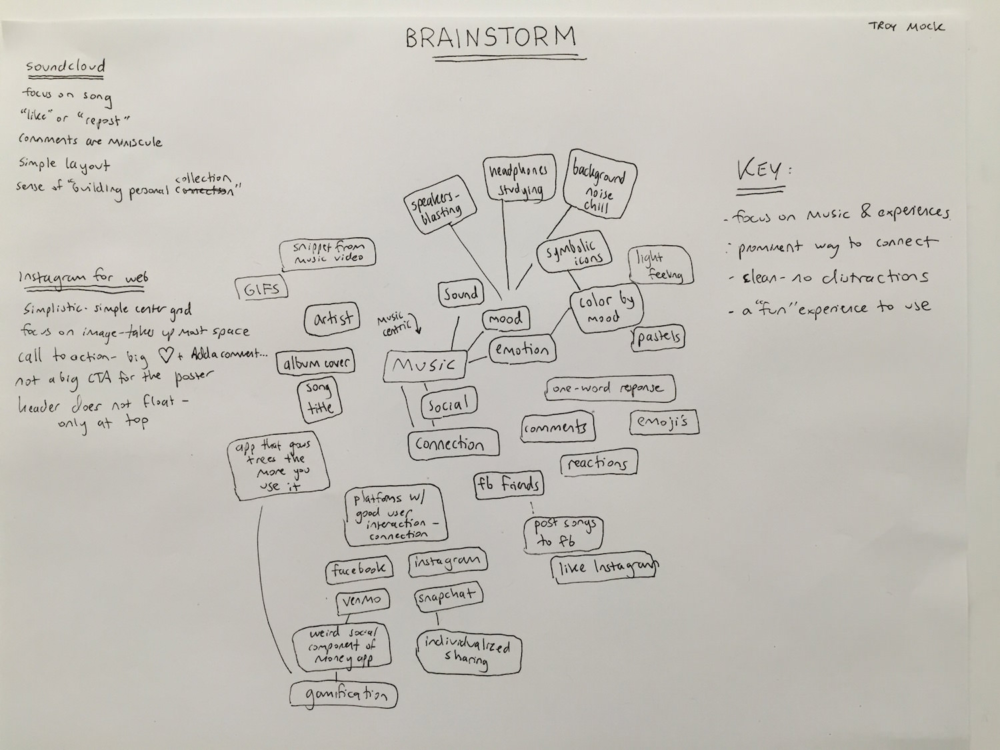
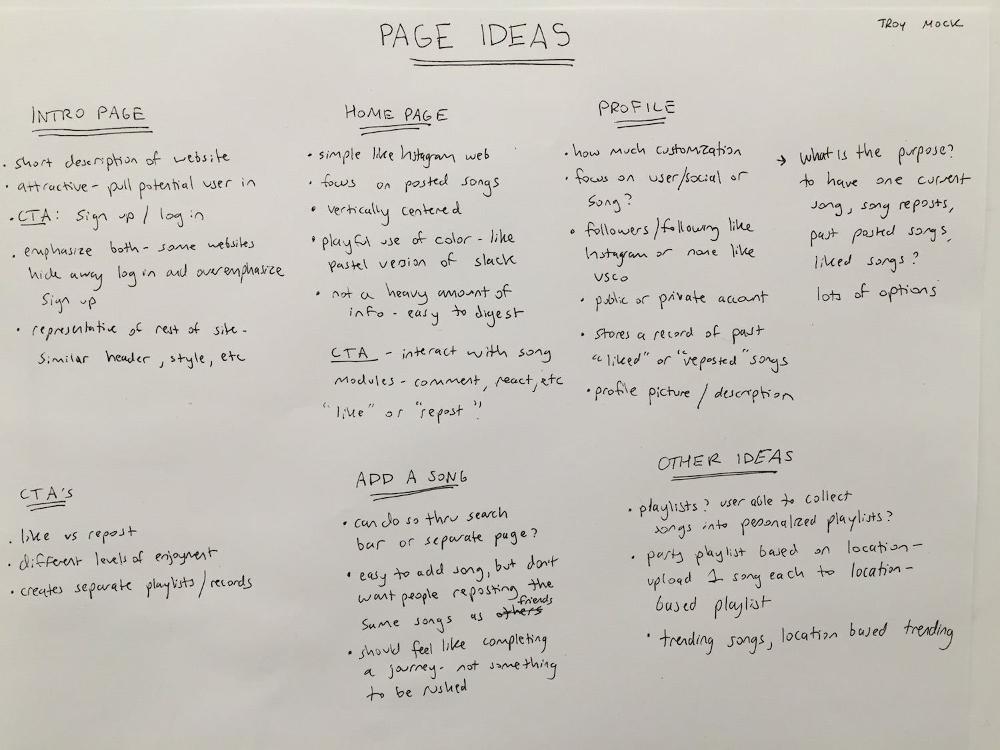
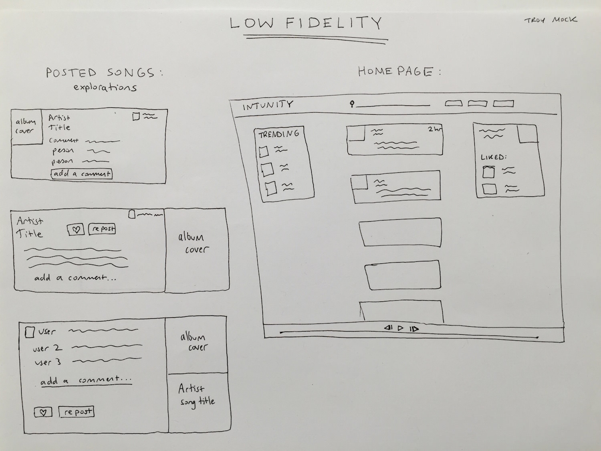
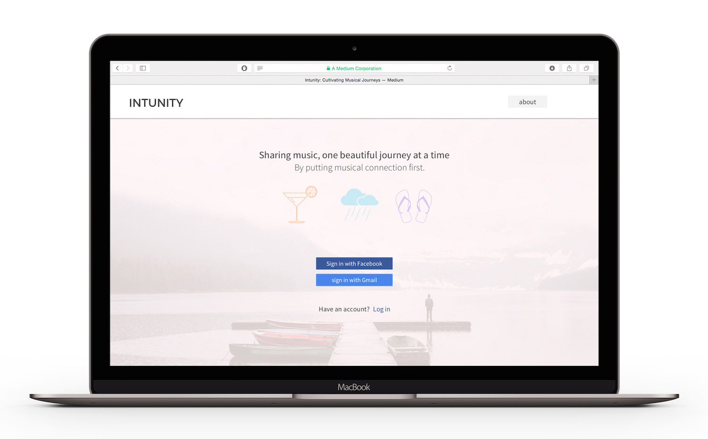
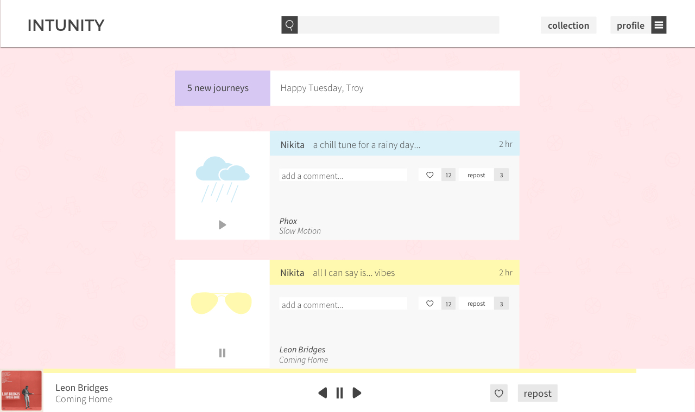
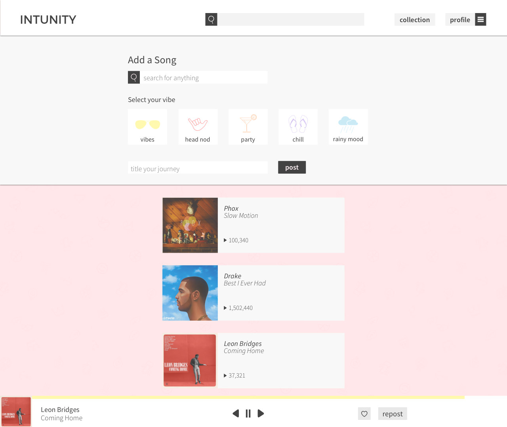
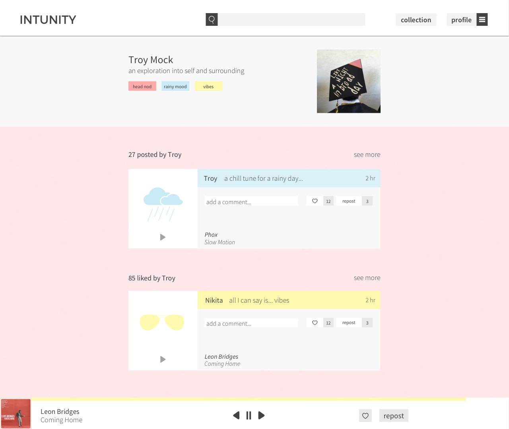
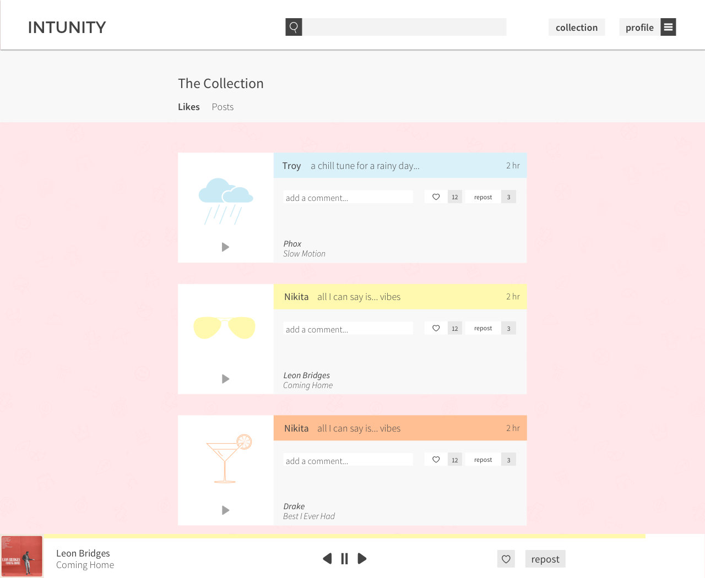

Intunity was first created by three student developers at Cornell University’s 3 Day Startup. The original idea was for an individualized music stream curated specifically by the user’s friends. The users could only post once a day in order to maintain the importance of each song. I was brought on the team to do the visual design for Intunity. What began as an attempt to create a visually intriguing website evolved into a rehashing of the entire concept. I am currently working with the team to bring Intunity to fruition.
I love listening to all sorts of tunes, whether it’s the comforting strum of guitar or mind numbing bass of who-knows-what. Music can facilitate my mood and inspire me to appreciate the humdrum buzz of the world around me. Music is about emotion through the ether of rhythm and harmony. However, the popular methods of music dissemination do not allow me to express what a particular song means to me — the emphasis is on the artist and song, not my relationship to it.
Intunity puts musical connection first — sharing music, one beautiful song at a time.
Design Process
Through various brainstorming exercises and research, I landed on three key insights. Firstly, the focus would be on the musical experiences. Secondly, there would be some form of connection- comments, reactions, etc- that is prominent. Finally, there would be minimal distractions. This means no superficial features that are not at the core of what Intunity attempts to achieve. The website would combine the music-first experience of Soundcloud with the sociability of Instagram.

Brainstorm and mind mapping

Page ideas with specific call to actions

Low fidelity of the song module and homepage layout
High Fidelity

The landing page for new users and those who are not logged in. The user can sign up using other media platforms to build off their existing social network.

The homepage where the user would find their friends' favorite songs at the moment.

The page to add a song. The grey section’s position would be absolute while the user would be able to scroll through the searchable songs. The process of adding a song is both simple and significant. This is to reinforce the importance of choosing a song that connects with you and others — to emphasize the sharing of a journey.

The individual profile page. The user is able to customize their profile picture and short description. The mood tags below the description are automatically generated depending on the types of songs the user posts or likes. The tags are an emotional snapshot of the user’s musical preferences.

The collection page is a toggable list of all the user’s past liked and posted songs. It is a living record of both the songs and their experience with those songs.